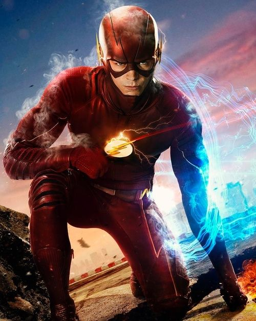
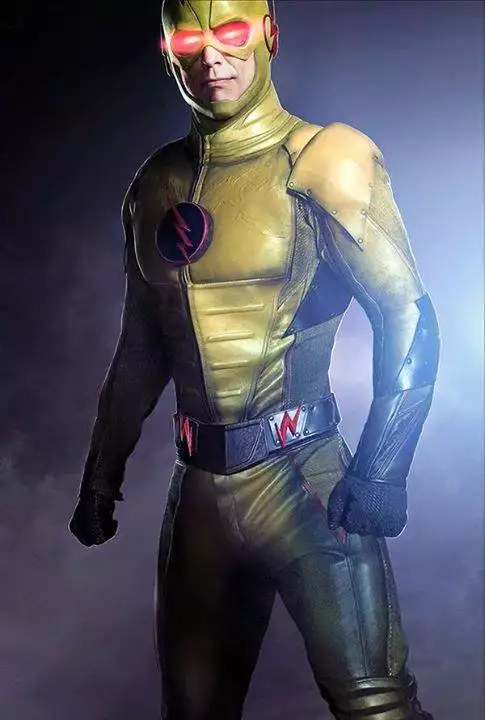
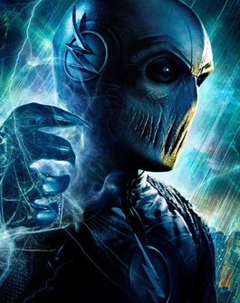
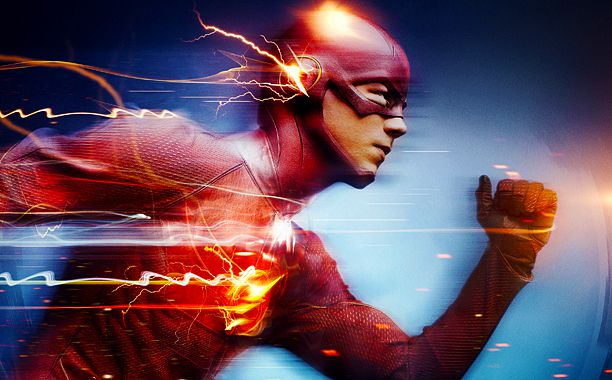
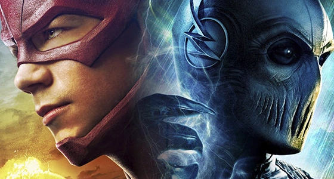

Barry Alen
acompanha a história de Barry Allen, um investigador forense da polícia de Central City que, após um acidente com um acelerador de partículas, é atingido por um raio e entra em coma.

acompanha a história de Barry Allen, um investigador forense da polícia de Central City que, após um acidente com um acelerador de partículas, é atingido por um raio e entra em coma.

Eobard Thawne, mais conhecido como Flash Reverso, é o arqui-inimigo de Barry Allen na série The Flash. Famoso por manipular o tempo e odiar profundamente o herói.

Zoom é o principal vilão da segunda temporada da série The Flash, sendo um dos inimigos mais rápidos e cruéis que Barry Allen já enfrentou, sendo a pessoa por trás da morte do pai do flash.

